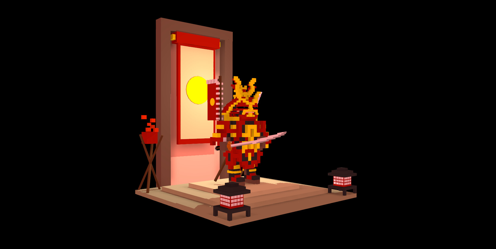
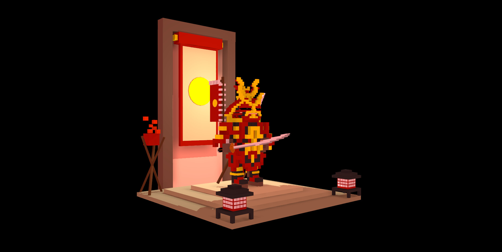
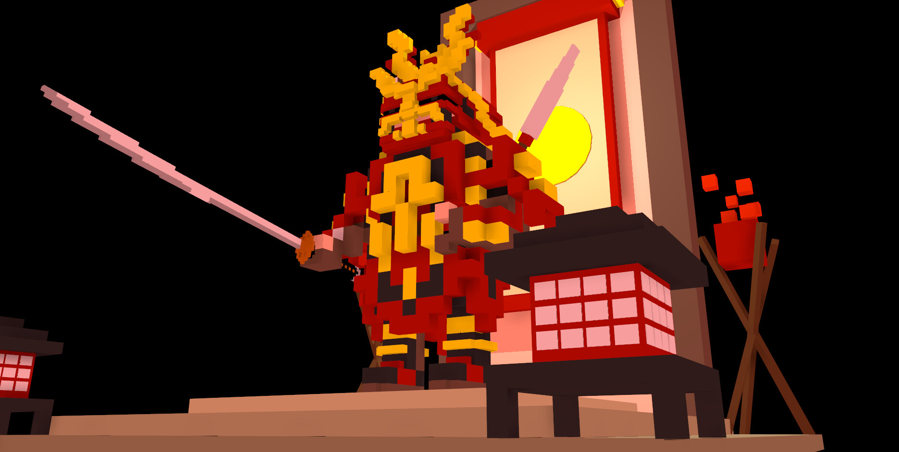
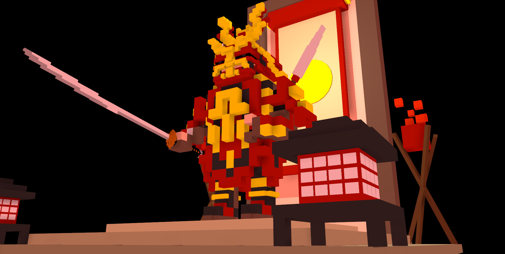
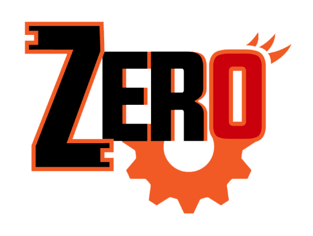
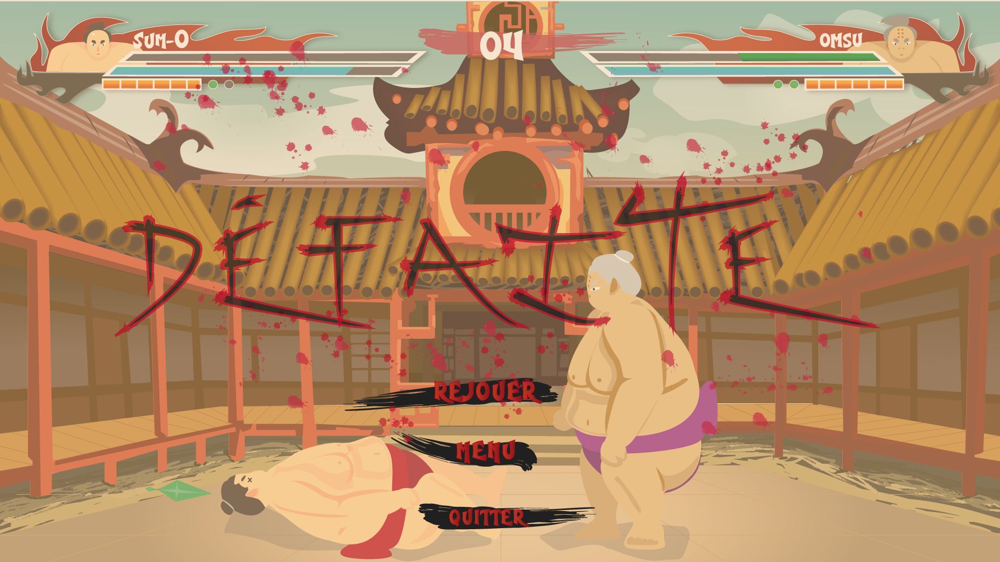
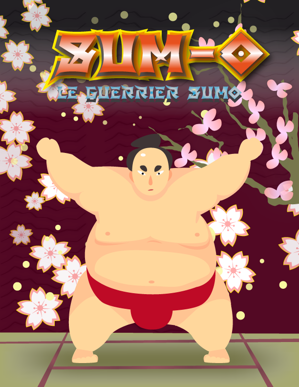

Jerry Kwok Hiu Fung
Jeux / 3D / Divers
Profil
Bienvenue sur mon portfolio! Je suis maintenant finissant en techniques d'intégration multimédia. J’aime utiliser ma créativité dans diverses facettes du multimédia, notamment la création de jeux vidéo. Ceci, en partant de la création des éléments graphiques, à la programmation des différents éléments interactifs du jeu . J’aime travailler de manière structurée, efficace, originale et dans un environnement dans lequel je me sens bien. En tant qu’intégrateur en multimédia, j'accorde de l’importance aux valeurs telles que la passion, le dépassement de soi, l’éthique, la ponctualité et l’ouverture.
Jeux
Mes créations de jeux
Je m'ouvre, pour la première fois, à la création de jeux 3D sur le moteur de jeu Unity au début de l'année 2017. Je me suis alors découvert une réelle passion dans l'assemblage et la conception de jeux. Je cherche maintenant à élargir mes horizons sur un autre moteur de jeux, Unreal Engine.
Zero
Zero est le jeu le plus ambitieux que j'ai réalisé durant mon parcours en technique d'intégration multimédia. Il a été réalisé en équipe de trois. Je me suis principalement occupé de la programmation, de l'intégration dans Unity et des interfaces. Le personnage et les décors ont été réalisées par Zachary Jose et Marc-Antoine Déziel.
Plus d'informations sur mon artstation.Mission:Florale
Ce jeu est mon premier jeu 3D sur Unity. J'ai réalisé les interfaces, la programmation et les terrains. Les modèles 3D proviennent du Asset Store de Unity. C'est également durant la conception de ce jeu que je me suis découvert cette passion pour la création de jeux.
Plus d'informations sur mon artstation.3D
Samurai Voxel
Ceci est mon premier modèle 3D dans le logiciel d'Autodesk, Maya. C'est une réalisation en voxel , c'est-à-dire des cubes collés entre eux, d'un guerrier samurai.
 

 

Aich Miros
Le Aich Miros est une arme fantastique que j'ai aussi réalisé sur Maya. Comme on peut le voir, c'est une pioche ayant la particularité de s'attacher à un moteur pour augmenter sa force de frappe lors d'un coups.
Oreps
L'Oreps est jusqu'à maintenant mon chef-d'oeuvre en matière de modélisation et d'originalité dans le domaine de la 3D. C'est un vaisseau constitué d'un ballon propulsé par un moteur et d'un bateau. Afin de voir plus de rendus, mon artstation est la place à ne pas rater.
Synopsis de l'univers du Aich Miros et de l'Oreps
L’univers que j’ai créé se passe deux millénaires après le passage de la pluie de météorites en l’an 2050 qui ravagea l’Humanité. Suite à cet énorme cataclysme, tandis que la terre reprend petite à petit ses droits, les survivants de l’Humanité bâtirent des espaces flottantes sur les océans du monde pour y vivre, en abandonnant derrière eux ce qu’ils ont bâti. Les terres furent alors peuplées pendant ces deux mille ans par ce qu’on appelait autrefois dans les mythes, les golems.
Divers
Web
Dans la section de mes projets web, on peut y retrouver deux principaux projets. Bref, une refonte d'un site existant et d'un petit jeu de rapidité ma foi fort amusant. D'ailleurs, ce portfolio est également l'une de mes plus grandes fiertés de mes projets au collège.
Vidéo
Durant mon parcours en intégration multimédia, j'ai principalement appris les logiciels Premiere Pro et After Effects. C'est également durant mes études que j'ai pu m'améliorer grandement en montage et en effet.
Art
L'art en général et principalement le dessin est depuis longtemps l'une de mes plus grandes centre d'intérêts. Je maîtrise depuis maintenant deux ans les logiciels Photoshop et Illustrator. J'accords une attention toute particulière à Illustrator.
Mes projets web
À gauche, il y a le projet de refonte de site qui a été réalisé dans le cadre d'un cours de design web avec le framework Materialize. J'ai refait le site du musée Ghibli selon mes goûts. De plus, ce dernier a été réalise dans l'approche mobile-first.
À droite, c'est un jeu réalisé avec le framework Phaser. Vous avez 10 secondes dans le compteur. Le but du jeu est de cliquer les bonnes cases avec un rythme constant. Vous gagnerez 1 seconde à chaque deux cases.
- Phaser
- Materialize
Technologies utilisées:
L'avion en papier
Ceci est un animation 2D que j'ai réalisé sur After Effects. C'est un avion en papier en 3D qui fait le tour du monde. Voir mon artstation pour en savoir plus.
- After Effects
- Premiere Pro
Logiciels utilisés:
Mes illustrations
Logo du jeu Zero
Logo du jeu Mission:Florale
HUD

HUD de mort
Poster
Voici quelques illustrations que j'ai réalisé principalement sur Illustrator. Il y a là les logos de mes deux principaux jeux et des illustrations réalisées dans le cours d'un cours.
- Illustrator
- Photoshop